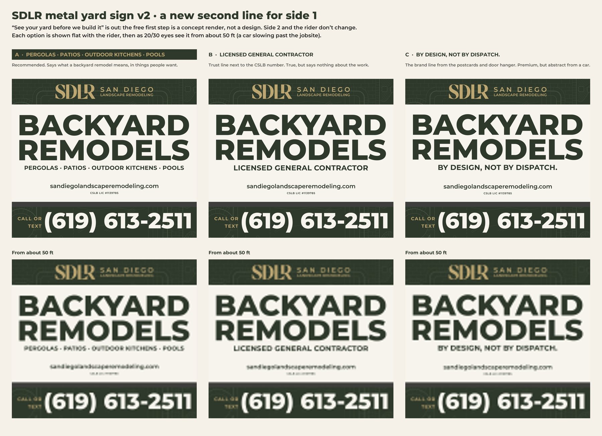
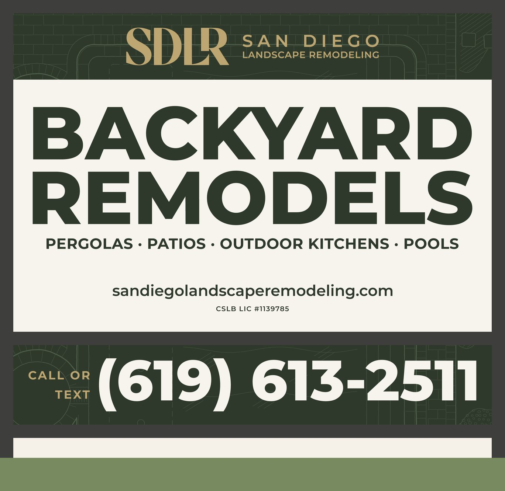
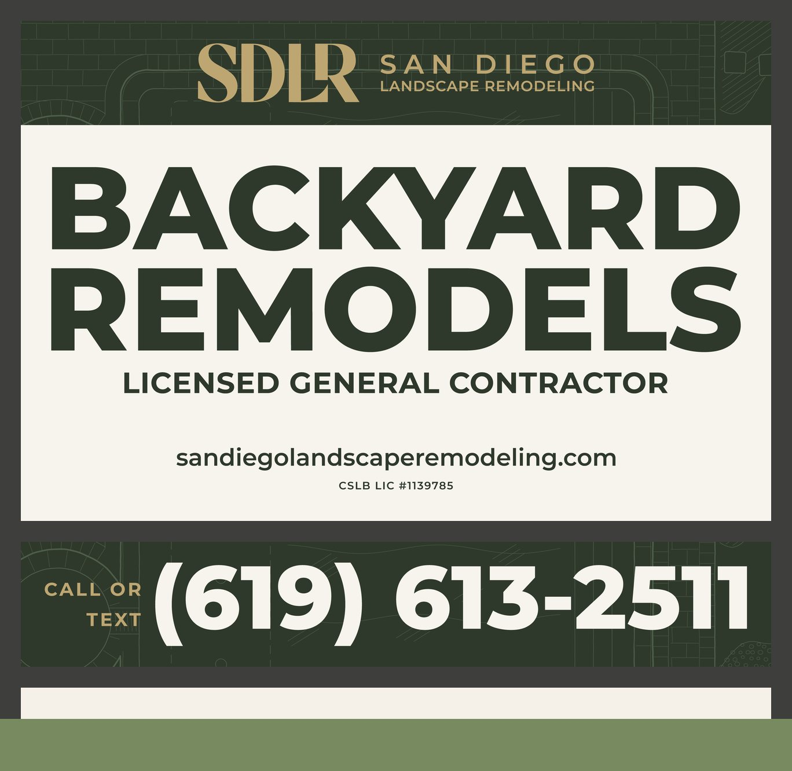
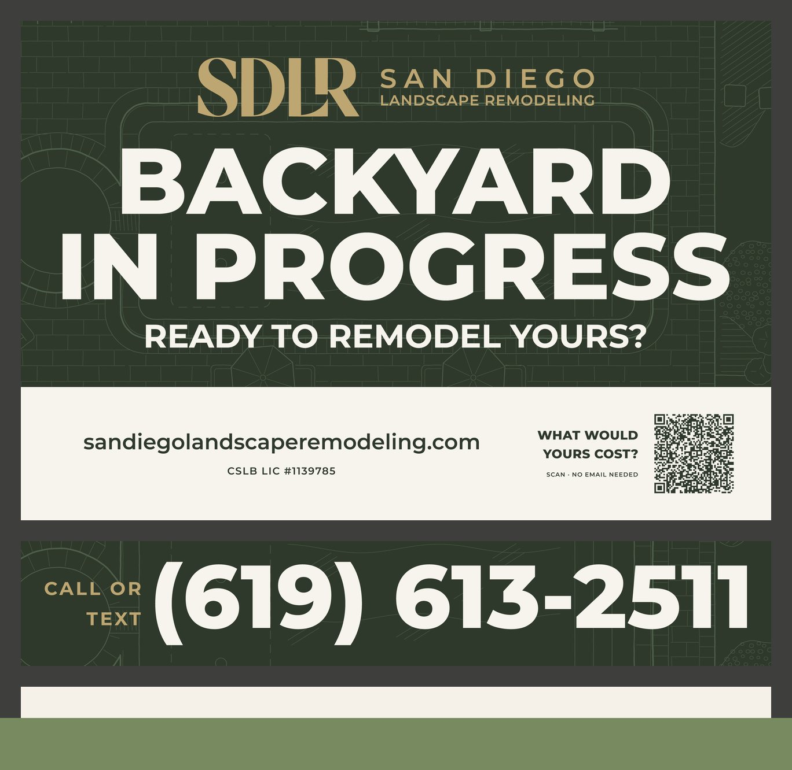

San Diego Landscape Remodeling · Metal yard sign · Version 2
A new second line for side 1
“See your yard before we build it” is gone. The free first step is a concept render, not a design, so the sign shouldn't sound like it promises one. Side 2, the rider, the sizes and the colours are Version 1 as approved.
Your callPick A, B or C for the line under BACKYARD REMODELS. All three are print-ready. Not ordered.

Each option with the rider below it, then roughly what a driver with 20/30 eyes makes out from about 50 ft.
My pick: A, the services
It says what a backyard remodel is, in things people already want: pergolas, patios, outdoor kitchens, pools. Pergolas lead because they're what San Diego searches for most.
It promises nothing that has to be walked back. No design, no render, no price.
The cost: it's a long line, so it's smaller (0.78 in capitals vs 0.98 in for B and C). It still reads from a slow car; from farther out, BACKYARD REMODELS and the number do the work.
The three, flat with the rider

A · PERGOLAS · PATIOS · OUTDOOR KITCHENS · POOLS

B · LICENSED GENERAL CONTRACTOR: trust, right next to the CSLB number, but nothing about the work
C · BY DESIGN, NOT BY DISPATCH.: the brand line from the postcards and door hanger; premium, but abstract from a car

Side 2 + rider, unchanged
Not on the list: “insured” (not confirmed yet) and anything about the concept render or a free design.
Frame, print spec and prices
Same as Version 1: JustSignFrames 24 × 36 one-rider H-frame, panel 36 × 24 and rider 36 × 6 slide in, no holes; about $169 a set (panel + rider) at Signs.com. Full details on Version 1.
The layered Illustrator master (five artboards: the three print pieces plus options B and C for side 1) and the README are in Drive under
02 Clients/san-diego-landscape-remodeling/assets/print-ready/yard-signs/2026-11-23-36x24-metal-rider/print-files-v2/. Version 1 is kept.